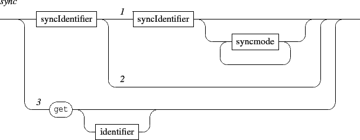
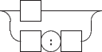

Next: 10.1 Synchronization modes
Up: INScore OSC Messages Reference
Previous: 9.3 Mapping files
Contents
Index
10. Synchronization
Synchronization between components is achieved at scene level: a sync node is automatically embedded in the scene, its address is /ITL/scene/sync and it supports messages to add or remove a master / slave relation between components or to query the synchronizations state.

- [1] this is the slave master form followed by an optional synchronization mode. It adds a slave / master relation between components identified by identifier1 and identifier2.
- [2] this is the slave form that removes the slave synchronization for the component identified by identifier1.
- [3] the get message is intended to query the synchronization state. The optional parameter is the identifier of a component,
Synchronization between components has no effect if any of the required mapping is missing (see table 9.1).

Synchronization identifiers indicates 1) the name of a scene component or 2) the name of a scene component associated to a mapping name.
Note that the sync node doesn't responds to common component messages, but accept the get message.
The get message without parameter is equivalent to a get message addressed to each object declared in the sync node.
Subsections
Next: 10.1 Synchronization modes
Up: INScore OSC Messages Reference
Previous: 9.3 Mapping files
Contents
Index
Grame - Interlude project [ANR-08-CORD-010]